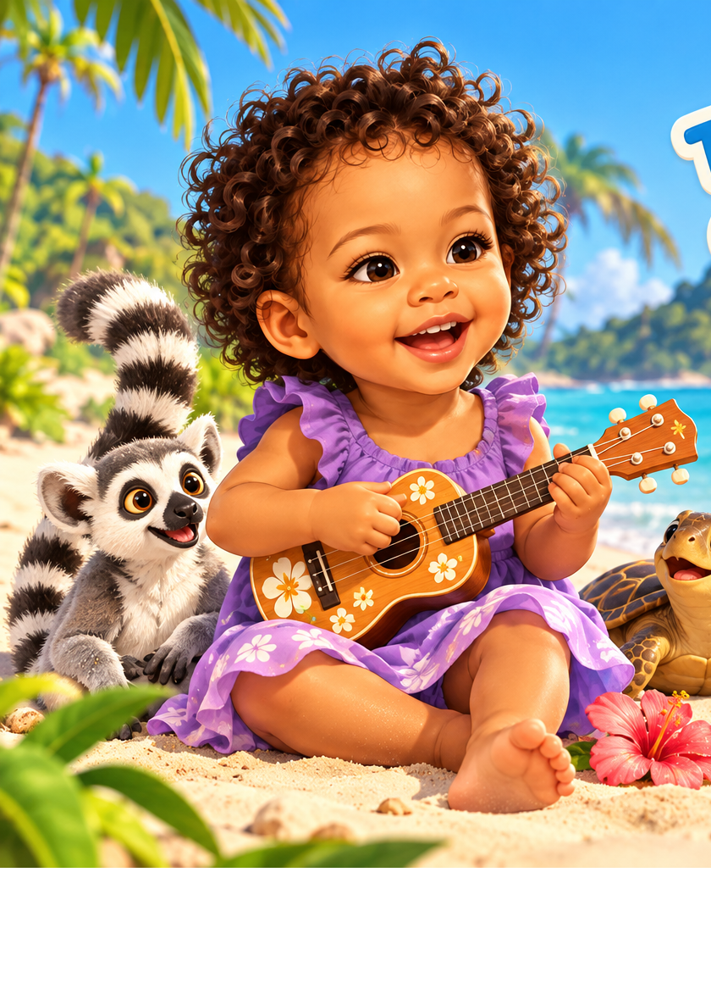
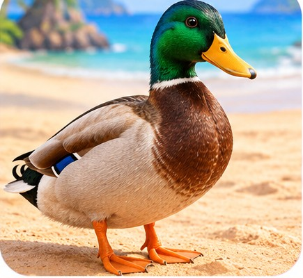

The Little World of Melody
A little moment to discover
Let's find the duck!

Can you help Melody find a little duck?
Meet a new friend
This is a duck!

Duck
Canard
Canard
Listen, then help Melody find the duck.
Little game · 1 of 3
Where is the duck?
Our little adventure is complete
Lovely exploring!
You found the duck with Melody. Now let's take a little break.
3 little questions